ProjectNight.com
Wednesday Night Project Night, Page 8
Most recent night first.
21 January 2009: Jon's Machine Shop.
First we had to shed a little light on the projects, on account as a couple of the lights were burned out. That required a certified mountain climber light bulb expert to ride the fork lift up to the dizzy heights of the ceiling.
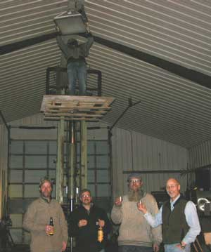
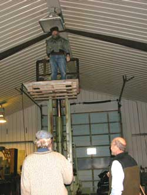
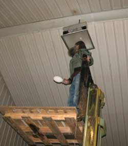
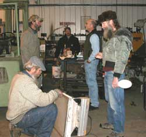
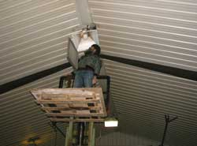
By the time that was done, half the Scotch was gone.
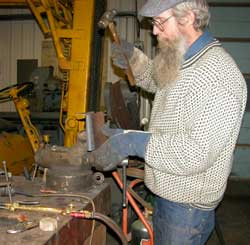
Then actual projects were started. The roof rain run-off spout drip disperser was started and finished. Well, the rain water run-off disperser has been working for years, but the drips do not reach the run-off disperser, so the drip disperser had to be made, of course.Then we talked about it for while. Then we took a picture of the steel dragon again, so we can say we worked on that project.
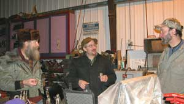
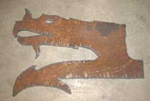
Then the reliable 5.4 million year old lignitized wood pipe project came out, in desperation for a project that did not require much effort. The stem hole was connected to the bowl hole. That was a major advance which should be good for a few more weeks. Good thing nobody is waiting to smoke anything.
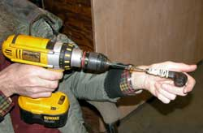
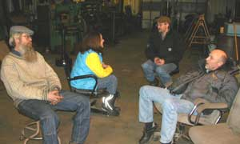
Then we discussed Jon's newly patented digital snow depth measuring instrument and the fact that President Obama has already assured himself the status of the worst US President, by having adopted and extended all of the previously worst president's inherently doomed war, police and economic scams.You cannot print more worthless US paper dollars to get yourself out of the problem created by printing too many worthless US paper dollars. You cannot kill your way out of the problem created by your military killing too many people around the world. You cannot hire more malicious police to solve the problem of hiring too many malicious police who are so desperate for enforcement budget excuses amid a lack of enough terrorists and real criminals that they arrest more and more common Americans who damaged nobody and presented no genuine threat to society.
If you are not laughing at the folks who keep voting for the DemocanRepublicrats who keep making the problems worse, you are missing the show.
We discussed the lawful, peaceful, honorable, boring, reasoning-based solution to the US Government, that everyone wants, but to mention it is to invite arrest for suggesting the process of reasoning that enrages the minds of Bush/Obama and their power-craving Democan-Republicrat war regime, their military, police, prosecutors, judges and other institutionally power-damaged minds. So the process will remain secret, known only to the ProjectNight colleagues, select insiders, and every other common-sense person.
Or something like that. Shortly left bereft of Scotch, we left. Expect more when more happens.
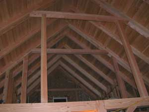
17 December 2008: Matt's Timber Frame construction site, somewhere on Sluicebox Road, off Gold Mine Trail, past Riffle Board Lane, Fools Gold Road and No Gold Road, there in the mining district.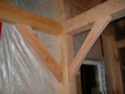
Well, those folks in the lower 48 lament the loss of good farm land to housing subdivisions. Here in Alaska we lament the loss of good gold ground, unless the paystreak got too thin anyway.
It was cold outside and toasty warm inside. We did not get a lot of timber frame construction done, if you can imagine that, but we got the full scoop on timber frame construction and good ale brewing. A genuine architect was there discussing innovative Alaska house construction details and fine wine.
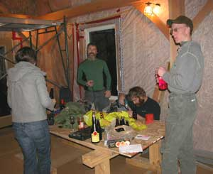
A couple wood tool repair projects were actually completed.
The photo guy failed to do the full architectural photo complement of the basement level and all the details. We will send him to architecture photo school for his masters degree, ah, sometime.
Thick exterior foam laminate siding panels are simply the way you want to build your next house in cold weather. And the plain bold exposed timber frame image on the interior will leave your guests both impressed and feeling secure during the next earthquake. The mortise and tenon joints, and various other heavy beam joints complement the image.
We scheduled a photo session for when the interior walls are completed. We might even schedule a real camera guy.
If you want a Timber Frame house built to Alaska standards, call Matt, or email the web slave listed at the bottom of the home page. The web slave knows Matt. He will get ahold of him.
Same if you want ProjectNight at your shop, or to get on the ProjectNight notice list, or if you have some project stories and you need assistance with any good ale, fine wine and gourmet food on Wednesday nights.
10 December 2008: Duff's shop.
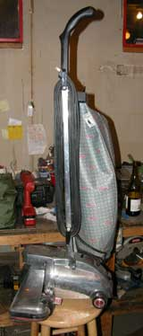
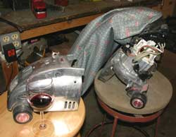
Shopping at "The Mall" is known of by regulars. For those of you who are not regular, dumpster diving produces such material wealth as the 1981 Kirby Heritage vacuum cleaner featured at the internationally known 10 December 2008 ProjectNight. It was merely dirty. With a little cleaning, some homdihooming and some dinking around with the brush, it works perfectly. Hmmm, no more excuses to not do the vacuuming.
Radar the ProjectNight dog did most of the work, then put his tools back in his tool bag and just laid around the rest of the evening, telling stories.
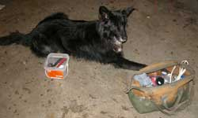
The eloquent Aqua blue genuine vinyl covered chair, another Mall acquisition introduced to Duff's shop at the famous 12 November ProjectNight, has been upgraded to a combination cutting block, work bench and chair. Everyone should have one. The roller for the table saw extension, to be fitted to the top of the back, is still on the project list.
Duff's stove made by Mark and upgraded by Tim arrived back at Mark's previous shop now owned by Duff because Mark and Joan are with Mischief down in Juneau making another shop. Juneau, the State's hangout for politicians, is an ideal place for Mischief.
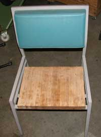
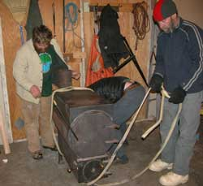
There was some serious discussion of sharpening the monster timber frame power Mortise and Tenon joint maker, as you can see, and the bottle of fine ale was finished.
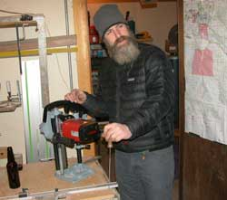
After all was said and done, more was said than done.
3 December 2008: No shop. Excuses number 37, 62 and 105. No projects. And therefore things most likely got done.
26 November 2008: Jon's shop.
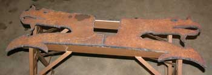
Fer good grief sakes you will have to show up for several ProjectNight's to make up for this one. Dragons walked across the shop floor.
The guest lecturer gave a computer slide show on the 2007 SnowStar trans Alaska-Canada snow science expedition. Five snow machines and sleds laden with snow research instrumentation and gourmet food left Fairbanks Alaska. They linked up with two more snow machines, scientists and sleds in Canada, and continued across to near Hudson's Bay. Anyone else would have had to pay a lot of money for an adventure like that. Hey, come to think of it, all we taxpayers did just that, and we did not get to go. No problem, Obama has promised us CHANGE. Next time, we get to go.
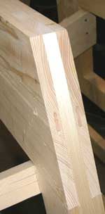
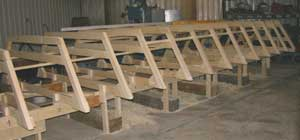
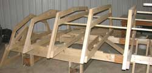
They took snow samples across the top of the continent, testing for atmospheric pollution precipitation and gourmet food preparation qualities. Well, when you have a snow machine instead of a backpack, a few extra niceties get into the larder. The birthday cheesecake that came out half way across Canada, that tasted like 2-cycle snowmachine exhaust explained why a new 4-cycle 1,000 cc snow machine was sitting in the corner of the shop. Way cool photos of way cool places along the way. Good show. There was a lot of applause and cheering at the end of the show.The magnificent wooden river boat project induced much homdihooming. There was marveling at the big computer driven machine that was cutting some pieces of high tech plastic for some high tech plastic project. The 3/8 inch thick dragon headed feet for the elevated backyard oil pipeline end cap firepit advanced with work on the dragons. They indeed walked across the shop floor, in the hands of humans both ways.
One of the folks from a lower 48 shop marveled at how little Jon charged for his machining work for government agencies. The lower 48 sort said down where he was from they gouged the government for everything they could, and then a little more. And then even more during April. And if they had to work on weekdays, there was a surcharge. The aviation shops doing work for the military were the most practiced at the art. I thought that Alaskans were not enamored with our dear and benevolent friends in the government, but apparently the malicious government sorts are starting to treat the lower 48ers as bad as they treat Alaskans, with inherent results. Alaskans are charged up to $200 per person just for the RIGHT to walk up some of their own public mountains under the jackboot of the ClintonBushObama Regime. Might have to teach the dragons how to identify feds.
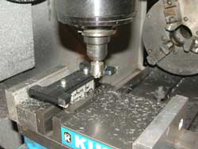
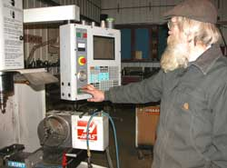
The variety of other cool projects and solutions to galactic problems, that advanced to the usual extent identified another sterling success for ProjectNight, and insured that the same projects and problems will be available for more ProjectNights. The photos of them got stuck in the camera. The camera may be added to the project list next time the plasma torch gets fired-up.
19 November 2008: Tim's shop.
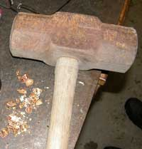
Some gourmet nuts were delicately cracked.
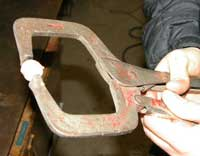
Real projects were undertaken, but first the igloo book.......This is like it happened. The ProjectNight.com web slave was talking to the AlaskanAlpineClub.org web slave, through the bars, in hushed tones to avoid raising the ire of the guards.
The Club got an email ad about a new book on how to make igloos and other snow shelters, by some back-east government-paid over-engineered author with a modicum of igloo credentials, being sold by some downtown New York City book company. Interestingly they were not an adventure book company, but an architecture and design book company, with actually useful information. Well, as you might imagine, Alaskan Alpine Club members have built and lived in igloos, snow caves and cardboard boxes from the Alaska Range, across Canada, over to Greenland, up to the North Pole, on over down to the South Pole and back up to the Alaska Range. Which igloo story do you want? But mountain climbers have not learned how to write, so a book about what they think they know might be interesting.
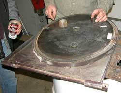
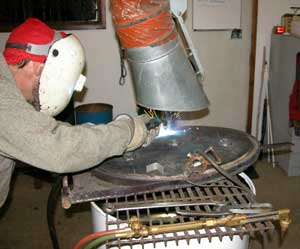
So the book and its author were mentioned at ProjectNight.com. "Oh yeah, that guy." Well of course you would expect the Fairbanks around-the-world cold weather adventure sorts at ProjectNight who do the actual work the government sorts take credit for, to know the government sorts who take credit for the Fairbanks sorts' work. "Yeah, he........... fill in all the blanks with whatever you want, and that is just the start of it........... but he is technically pretty sharp so the book is probably good."Well, we got back to the actual work of ProjectNight, looking for the corkscrew, so until we get a copy of the book to read about what we do, you might order one to share the amusement, and email us a report. Fact is, what with the economy the way it is, and the DemocanRepublicrat War Regime still bent on robbing everyone with more obscured layers of taxation to pay for more bombs, you might want to know how to build igloos and snow caves if you live north of freezing, or if you might have to flee that far north. Global cooling follows global warming, so this book in your library may also be good if you live south of freezing. The igloo book info is at http://www.WWNorton.com/npb/nparch/073215.html. The W.W. Norton book people gotta have a sense of humor if they can survive 500 5th Avenue downtown NYNY. They probably carry bigger guns than Alaskans carry.
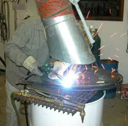
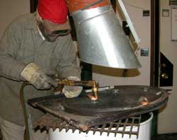
The wood fired boiler door was still warm from the boiler when it came in the door. It got an official ProjectNight modification for air flow through the door panel that is certain to increase its efficiency up to oil burning standards. A start-to-finish project finished at ProjectNight may warrant some sort of award. We might institute the Boiler Door Award.For those who have not kept track, the average price of a cord of good quality birch fire wood in Fairbanks has long held at a third of an ounce of gold. It is currently at a half ounce of gold, a new high. Guard your birch trees.
This is the formal announcement that the ProjectNight long bolt through the jeep tail gate hinge, holding the two sides of the jeep together, got completed Tuesday night. The test drive was to ProjectNight. The jeep felt brand new. The back end was not wobbling around independently.
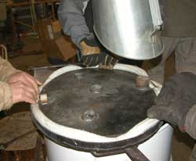
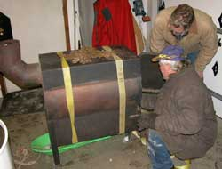
That is the new spun glass rope sealer being pushed into the boiler door edge.
Duff's wood stove built by Mark received more homdihooming for some welding. The homdihooming session was continued from last week. Actual welding only follows sufficient homdihooming.
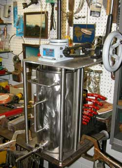
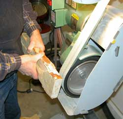
The stainless steel sausage suffer got a couple finishing touches and a lot of homdihooming.
The loon design spalted birch wok spatula advanced beyond the spit piece of firewood stage to something resembling an intent to do something with the wood.
Geologically dating pollen was discussed, in relation to old things and relatively recent times studied in the depths of glaciers. The local pollen expert was not present so we sounded knowledgeable.
The total average thinking (actually asking and answering questions for the purpose of learning) by a million people over a year (Q/A per hour), who then cannot practically synthesize or combine their independent knowledge for any practical goal, can be replicated by one person asking effective questions in a couple days, with the knowledge held by one mind, thus able to manifest the results. Well, at ProjectNight we do a lot of thinking, which is why so little gets done.
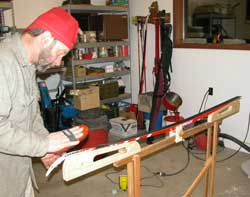
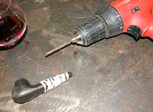
Cross country skis got waxed. Back in the early days a person stood out in the snow, rubbed some wax on his skis, rubbed the wax with his hand, put his skis on and set out careening through the trees. The web slave has seen a lot of fancy stuff and process progressively developed for applying wax to skis, but this is the first time he has seen wax brushed with a wax brush. If this trend continues, after getting the wax to the proper condition, the skis will be thrown away, and the skier will careen through the woods on the wax.
The quintessential 5.4 million year old wood pipe project, number 3 of 4, was advanced at the same rate as the bottle of wine, the moose sausage and the smoked salmon. That project comes out every time the pipe maker needs to say he worked on a project.
12 November 2008: Duff's shop.
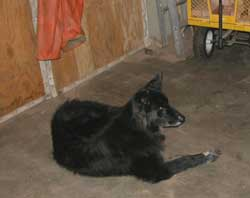
Hmmm. 3:00 AM. Yeah, the web slave can be beaten into getting the report done. Well, after ProjectNight, he got back to the screen, insured that the world was teetering on the brink of disaster as usual, purchased a domain name, made a website, and uploaded it. You will not find it, but it is in full view in cyberspace, along with a few million other websites drifting around out there somewhere.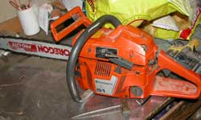
Website pollution has become a health hazard. Notice how many websites are instantly available to your computer screen, via wireless connection. That means they are in the air right next to your computer, waiting to slip in and poof into sight on your screen. So how many websites does the normal person sitting at a computer breathe into his lungs each time he inhales? And you thought cigarettes were bad. And add the ones that get to your screen and come out directly into your face. Where is the Federal Home Interior Atmosphere Safety and Hazard Commission (FHIASHC)?I am not suggesting that the ProjectNight scholars discussed politics while diligently working on projects, but various attributes of our dear and benevolent new Commander-In-Chief of the American War Regime were commented upon. "Have you joined the Obama gun buying frenzy?" "Nah, I bought more than I can use during the Clinton frenzy." "Well I just shot a new big 50 caliber revolver. Nice."
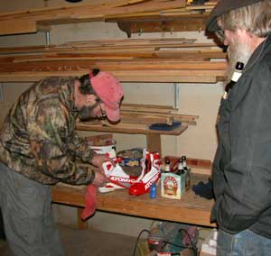
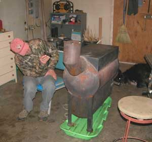
They got so far into the gun thing that even Warburton Pike was quoted: "You leave your guns behind when your women leave their children behind."Pity the intellectually primitive sorts who sincerely believe they can disarm a free citizenry, with an armed constabulatory who are so dumb they think they can disarm a free citizenry. Maybe one bullet at a time.
Who is the dumb and who is the dumber among those who also sincerely believe they can deny recreational drugs to humans? If you are not laughing at the humans who think they can stop the humans from doing what humans do, you are missing the comedy.
Radar the guard dog successfully guarded the shop. No pterodactyls attacked, but there was some scratching on the roof that sounded like pterodactyl claws.
Projects? Oh, a chain saw got fixed. Some high tech cross country ski boots got fixed. The pizza got eaten. The wood stove got brought into the shop for some expert inspection. Fine wine and ale was enjoyed.
A perfectly good chair from the dumpster was offered up, under threat of it going back to the dumpster. Carrie said she would take it, if it was left in the shop. Duff adamantly refused to allow it to remain in the shop. Well, after discussing its fine attributes, including the nice blue color duct tape covering the
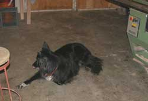
rip in the ugly aqua colored vinyl, it was noted that it was just the right height to add a roller for long boards being cut on the table saw. It was approved for consideration. At the conclusion of ProjectNight the guy who offered the chair abruptly left as Duff was looking a bit askance at the chair. Picking stuff up at the dumpster is fun, but you end up with the stuff. Dropping stuff off just doubles the chances of picking up more stuff.
That's it for the full report. Don't leave the children behind. Teach them young to shoot straight, preferably in the other direction.
5 November 2008: Jon's shop.
DRAGONS....... Steel dragons emerged from plasma flame.
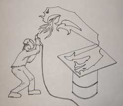
The only photo was hastily snapped by the neighbor, with his Kodak black and white instamatic. He showed up when he heard the screaming and saw the flame battle. He got one picture before the dragon sneered at him to scare him away, but he emailed the photo. The plasma guy survived, but we do not know how. Everyone else was inside the shop drinking wine and telling stories.The regular photo guy was in the shop. But he had used up all the photo card memory in his camera the day before, taking pictures of the "Paris 4 Prez" campaign signs at a popular street intersection. So dragons appeared at ProjectNight to upstage Paris.
Well, for Paris Hilton, the photo guy was spared. If he had taken pics of DemocanRepublicrat campaign signs, he would have been fed to the dragon. What the news media did not mention was how many votes Paris Hilton got. There were a lot. For the same reason the old Soviet, Nazi and North Korean news journalists reported only the popularity of the Central Authority, to fool fools, the dutifully compliant US news journalists do the same for the DemocanRepublicrat War Regime, to fool fools. Paris is Hot. In contrast, Boring Obama is just going to advance Bush's war and police regime, on schedule, with the usual lies. Laugh at the silly sorts who think there will be any "change" in government. There is a reason Obama lavishly praised his campaign strategist during his acceptance speech. An honest person would have not used one.
If you had a choice between being the US President, and being honest, notice the choice made by all the DemocanRepublicrats, and the choice made by honest people.
The elevated back yard fire pit dragon headed feet project advanced to the steel stage, with a bit of a spitting flame adventure.
The guy cutting the dragons out of 3/8" thick steel plate had not used a plasma cutter before. He was relegated to a position out in the snow. The steel was laying on an old empty 30 gallon barrel. Well, it looked empty out there in the snow and darkness. Part way through the project the heavy plate of steel rose up with a "whump" sound. Sure a good thing that was just an old empty spray can of something down in there, instead of those extra hand grenades and B-40 rockets we had left over from last 4th of July. I wonder where those things will turn up.
Then there was the story that went with the photo, but the neighbor was prior seen with a case of ale, and the plasma cutter was not coherent. He said something about the dragon leaping above him, but the body patterns in the snow indicated he and the camera guy were below the steel plate. There was, however, one set of dragon tracks that came out from the trees, but that is not unusual.
The carriage bolt head and the all-thread end of the long bolt to hold the two sides of the jeep together got welded together. Some sort of pressure plate for something got welded back together. Eloquent rhetorical illusions surrounded the fine wine and local ales. There were not enough chairs for the entire ProjectNight colleagues sitting around talking about projects. The roll-around chairs were in demand. Jon had a cushion chair in his first shop, until an old Studebaker he was fixing dropped into gear at the same moment the throttle linkage went to full-open. The cushion chair cushioned most of the impact against the wall. After analyzing all the data, Jon replicated the actuation series, in reverse gear, and watched the old Studebaker go out the door, accelerating across the open area, and into the birch trees, without the cushion chair. Some projects are more dramatic than others. Not many Studebakers on the road, but some in the trees.
The ProjectNight scholars noticed that Jon had thrown away a perfectly good large band saw blade with only some of the teeth missing. It was a heavy metal cutting blade. We got a mallet and snapped it into sections for various types of bush saws, real or on the project list. Well, when you travel by kayak along creeks crossed by fallen trees under pressure from the current, the best home-made saw confers the highest social status. Only the beaver may notice, but society is where you find it.
So two dragon heads and ears were cut, because that was how much scrap steel we dug out of the pile of old depleted uranium Abrams tank armor plates somebody got from a Fort Wainwright surplus disposal auction. Two more Dragon heads and six more ears will be cut when the Dragon guy gets out of the psych ward.
Project Night at Duff's shop next ProjectNight. Be there or be watching in that direction.
29 October 2008: Matt's shop.
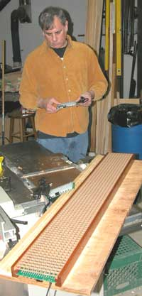
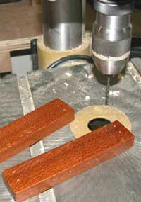
The lacewood frame LED light fixture advanced. There was the moment that the counter-sink drill got a bit aggressive, and one of those little short pieces on the drill press suddenly went whinging around in circles real fast, and caught everyone's attention until the Off switch was hit. No problem. The goobered up part will be filled with epoxy and put on the inside of the joint. Well, lacewood has an interesting structure of laced soft and hard areas that make drilling it more interesting, and the guy at the drill was distracted by certain comments on the current political election comedy.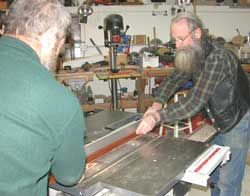
It is year 2008 and the Americans are still so intellectually primitive that they cannot figure out that everything they complain about, with regard to their government, was created by the DemocanRepublicrat War Regime for which they keep voting. And they teach their offspring to be equally unquestioning of what they are doing, like paying attention to the piece of wood on the drill press.
That is a really nice rabbit joint plane laying on those pieces of lacewood. High quality tools are better than ice cream.
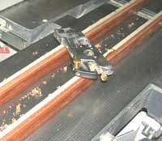
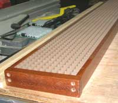
The future of lights looks like this, somewhat.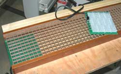
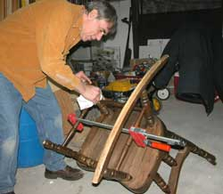
You might think that is one of those common nice sturdy rocking chairs, being repaired.
Well, that common nice sturdy rocking chair has been to Nome, and then back down to Seward and up to Fairbanks. Not many common nice sturdy rocking chairs get to Nome and then get anywhere else, especially after the tough winters when any old not-currently-used wood gets turned into cabin heat. Record of the high quality professional restoration project at ProjectNight.com will be added to the authentication paperwork for that rocking chair, signed and dated, so when the Antique Road Show shows up in Fairbanks Alaska, the antique furniture expert twins will enthusiastically talk about the history of the chair and then recommend it for cabin heat.
That is a highly engineered hard plastic component for the sausage stuffer. Not many sausage stuffers have this particular improvement on their design. But then not many sausage stuffers are made of whatever can be found around the shop so a few modifications must be added to make up for a few other things that were not found around the shop.
Then the real ProjectNight.com show at Matt's shop got set up and plugged in. Do not sit too close to your computer in case some of the wood chips got through the camera lens and are looking for an exit through your computer screen.
Unlike the Americans who efficiently make a lot of innovatively cheap constructions then cover the surfaces with beautifully presented thin plastic, the Euro sorts still methodically make made-to-last constructions, like timber frame houses, that are beautiful in themselves, not needing any foo-foo cover-up. The craftsmen therefore demand and get profoundly high quality tools to make the work efficient. That new German V-Dovetail jointing machine made impressively quick work of a precision dove tail joint in a beam, and sent a lot of wood chips into the air real fast. The dog had the good sense to get out of the way in a hurry. The machine operator, well, machine operators don't notice a lot of peripheral things when they get to operating machines.
If you want a timber frame house that will impress your European friends and more than just impress the American sorts, find that guy in the white t-shirt. He makes them. You might have to shovel him out from under a pile of wood chips.
And if you want state-of-the-art LED lighting in that house, do not look for the guy who was berating the lying politicians while the drill press was grabbing his ProjectNight project for a little whing-around show.
It is 2008. The test of time was completed long ago. The flawlessly corrupted, lying-if-their-lips-are-moving, DemocanRepublicrat Regime is the problem. If you are not voting for Libertarians, to start a multi-election trend among those silly sorts who still think all government problems can be solved with sound bytes and one election, you are the problem you are complaining about. Humans.... the best comedy on the rock.
Page 9 February 09 --- November
09
Page 10 November 09 - Present
Page 7 March 08 ------ October
08
Page 6 February 08 --- March 08
Page 5 December 07 -- February
08
Page 4 October 07 ---- December
07
Page 3 July 07 --------- October
07
Page 2 April 07 -------- June
07
Page 1 November 06 -- March 07